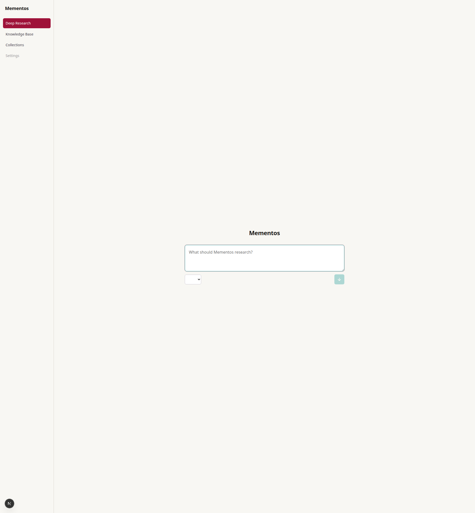
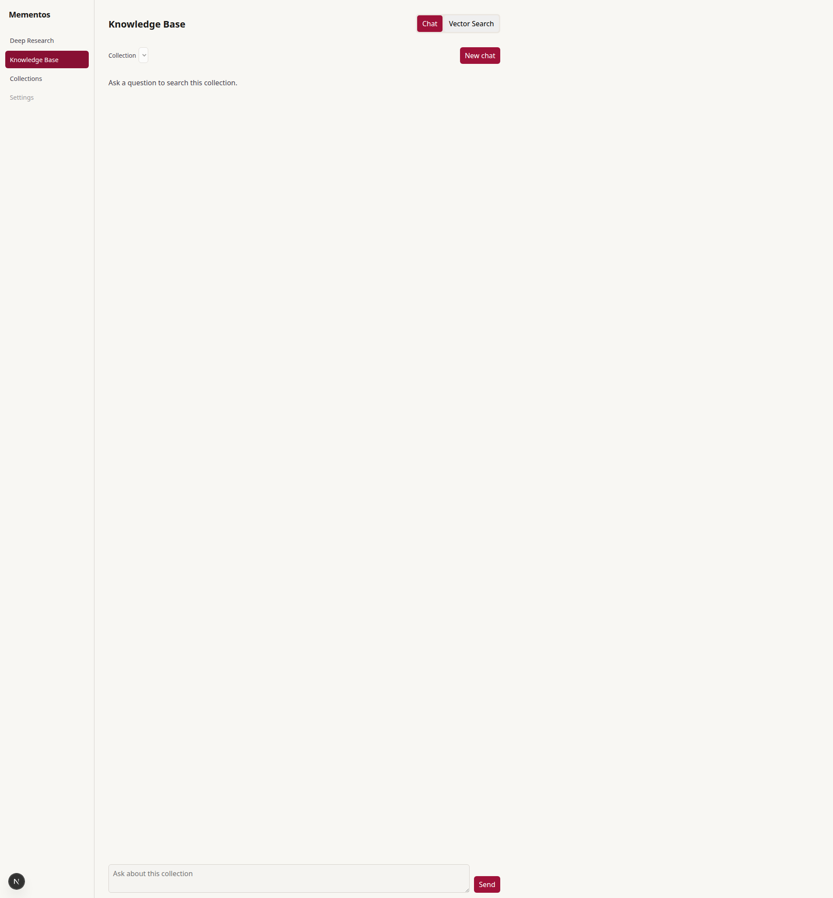

Keep: single focal action, generous whitespace, direct query. Change: give the entry point one memorable visual anchor.
A restrained translation of Persona 5's shared, shifting dungeon into a research app: paper as the calm surface, red/black/white as the moments of intent.
The current app already has the right calm baseline: warm paper, cherry active states, sparse borders, and a centered query composer. The gap is a stronger sense of occasion around the important states.

Keep: single focal action, generous whitespace, direct query. Change: give the entry point one memorable visual anchor.

Keep: readable transcript and simple tabs. Change: make collection and evidence feel like a named archive, not a floating control.
Official Mementos imagery is a high-contrast collage: black field, saturated red, rough white contours, tilted panels, pattern, and motion. Use those as punctuation, not as permanent chrome.
One red/black focal area per screen. Everything else stays paper, ink, or muted line.
Use skewed tags and offset outlines for sections and transitions, never for paragraphs or dense controls.
Turn the existing graph and timeline into one highlighted path with quiet completed nodes.
Use theatrical verbs beside plain explanations. The theme should reward recognition, not require it.
These are visual probes, not production screens. Each asks a different question while preserving the existing behavior and data model.
Ask one question. Mementos will map the evidence.
Question: Can the first screen feel like entering a distinct research space without adding controls?
Research route
Question: Can the four-pane workspace read as one journey instead of a dashboard of equal panels?
Ask about this collection. Answers stay attached to their evidence.
Question: Can the knowledge base feel personal and collected without turning chat into a themed game screen?
The official tone uses active verbs and a small wink. Keep the first sentence expressive, then make the actual state or action explicit.
Do not redesign the whole app yet. Test one entry screen and one running screen together.
Keep the existing navigation and API behavior. Add the red/black focal treatment to the query entry, turn the execution graph into the active route, and leave source rows readable. If the result still feels clear in grayscale, the direction is working.
Visual claims are based on official Atlus/SEGA pages and image assets. The project-specific recommendations also use the current app and its design constitution.
{kind=link}
{kind=link}